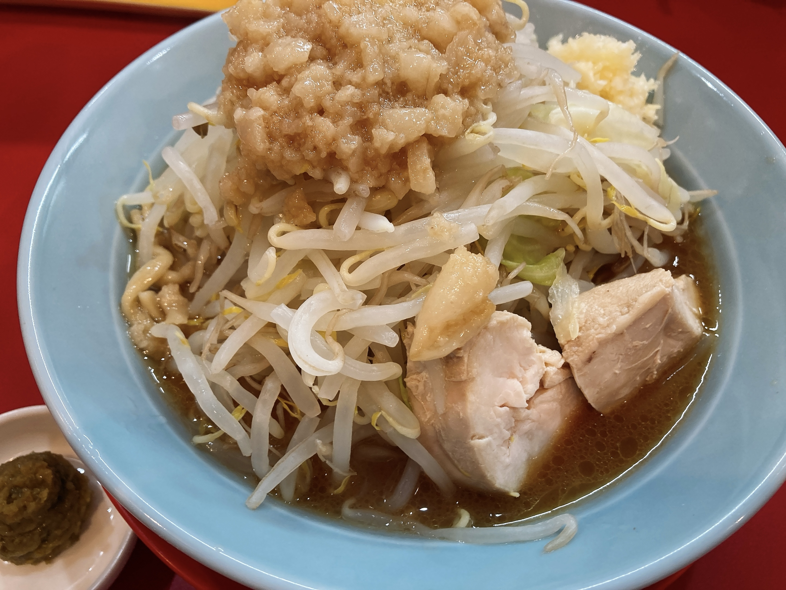
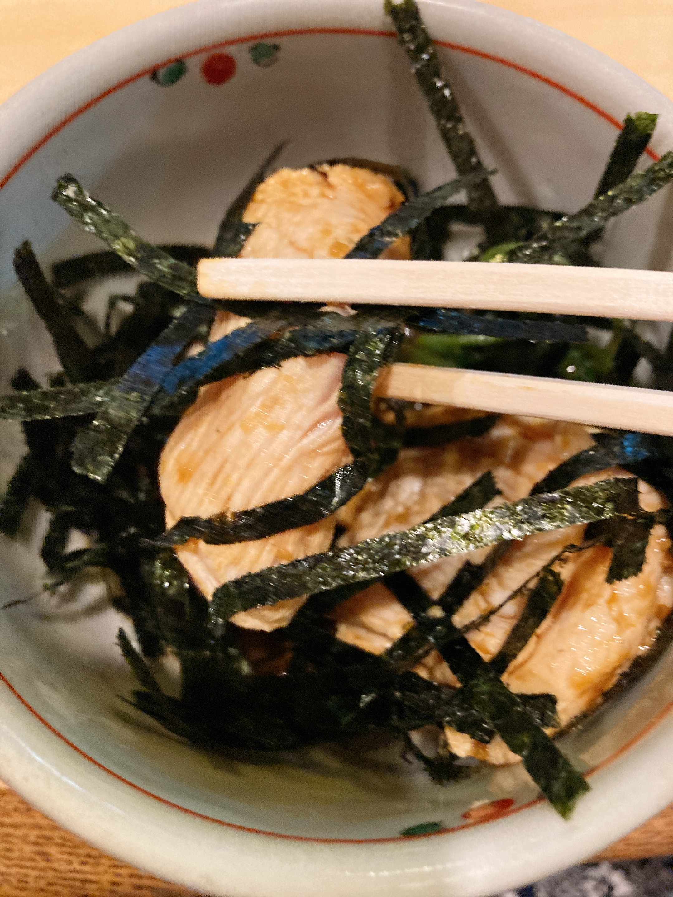
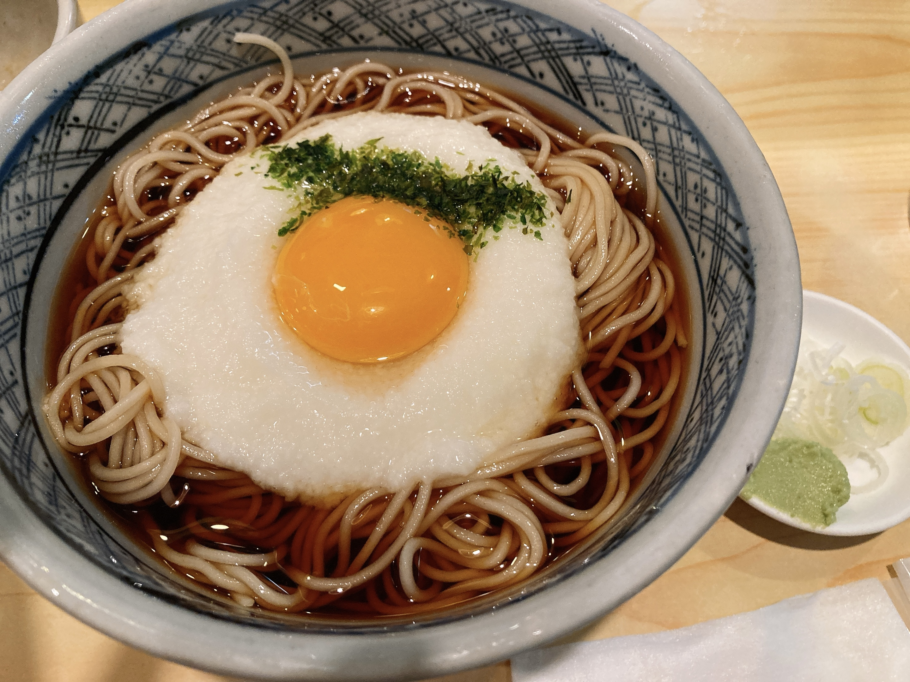

鶏肉とかいう最強の畜肉
なんだかんだ鶏肉より美味い肉はない。これは日常的にコスパが云々という話ではなく、仮にどんと大金を渡されて好きなだけ肉食ってこいって言われたとき、すなわち金銭的要素がすっとばせる条件下に置かれたときでも、鶏肉を食うのがQOL的に一番賢いという話。または、たとえ積める金が無尽蔵にあったとしても、鶏肉以外の肉で鶏肉の美味さを超えるのは難しいという話。まあ、好みによりますけどね。私は鶏肉が好きです。
と言いつつ、いきなり飯の写真をあげてしまうと不可抗力飯テロで死者が発生しかねないので先に音ゲー進捗報告を。午前TOEICを受けに三田まで行ったあと、都営三田線から直通京急とかいう爆速がいることに気づいて横ラに向かうとかいうあたまわるいムーブをかます。このおかげでATAMA WARUIのスコアが伸びた。
ATAMAのWARUさ改善しても銀取れないオチ pic.twitter.com/SOGyDm1VTK
— ₍₍⁽⁽🍳₎₎⁾⁾ (@sal_pipr) August 22, 2021
なお銀合格できるとは言ってない。Knight Riderのスコアのブレが激しすぎる。一度合格したステージアップを再度受けると裏君が出てきてくれないという知見を得ました。かなしいね。
新規SSS+,AM pic.twitter.com/9OBVvy79rt
— ₍₍⁽⁽🍳₎₎⁾⁾ (@sal_pipr) August 22, 2021
大幅に伸びた進捗達としてはこれ。あとは、破壊姉妹と脳漿のSSS。上位譜面を触るようになり始めてどんどん「これってぼくってどうすればいいんですか？」って配置に遭遇する頻度が増えた。Animosityの赤矢印混じり上下交互地帯とか、神寂の中心黃3点同時押しとか、先人の通ってきた意味わからん配置に私も立ち向かわなければならないのか……という謎の感慨。前者って体思いっきり傾けて上下分業するのと圧倒的パワーで左右で腕ぶん回すのとどっちが正しいんですか……？？？元々動画見て譜面研究するのが好きなタイプじゃないのでこれから厳しいなあ。
他にもゆるめの進捗として、レート旧枠から12.7の99を完全に追い出したのと、10+以下と東方のexpertをとりあえず全部触ったのと。10+となるととうとう初見AMが出なくなるという恐怖。一旦もっと低めでAM練習をするか迷っている。11曲数多いのでポイント貯めも兼ねてフリータイム祭りしようかしら。
下位expert埋めをしてる最中、Help me, ERINNNNNN!!をおそらく想定運指で捌いたらものの見事に右肘を痛めた。このせいでもうちょっと長居して13上位触っていく予定が崩壊してしまった。かなしい。ゆるさん。ヤバさはこの動画を見るとわかりやすい。
ガチでキツいよこれ。ステージアップ12受けるために横ラに来たのに危うく受けずに帰る羽目になるところだった。ほんとゆるさん。
Stasis調子悪すぎ pic.twitter.com/N5PRMKBckJ
— ₍₍⁽⁽🍳₎₎⁾⁾ (@sal_pipr) August 22, 2021
一応受かったし裏君のコメントが一通り聞けて満足1だけど、最後のStasisで疲労が祟ってスコアがぼろぼろに。もうちょっと調子いい時に銀合格狙いたいな。ほら、無彩色ってかっこいいじゃないですか。
昼はかねてから耳にしていた「酉」に。

二郎系、量的な意味で得意ではないけれど、油まみれの野菜は美味いと思う。麺全部もやしに置き換えてほしい、喜んで食べる。
ゆず胡椒のよさみがふかくて感動した。そして、鳥チャーシューの食感がたまらん。言い値で買うのでチャーシューだけ売ってもらっていいですか？
そしてHelp me, ERINNNNNN!!にやられて疲労であえーしか言えなくなった🍳、唐突にとろろ蕎麦が食べたくなって、適当に検索して出てきた蕎麦屋さん「角平」に入る。

そしてメニューにあった「鶏わさ」を衝動的に頼む。昼も鶏肉食べたのでは？……気にしてはならない。
いやこれまじで美味かった。問題ない程度まで火が通ってるように見えて口に入れると壮絶なぷりっぷりというたまらん塩梅。なにこれ毎日食べたい。わさびもいい感じに効いてて最高。

本来の目当てのとろろにもありつけてハッピー。元々炭水化物が得意なタイプではないんだけど、とろろをぶっかけると飲むように食べられるという知見を得て以来、体調のよくないときにとろろを探す癖がつきつつある。蕎麦でもご飯でも、いいお店あったら教えてください。
繁盛店なのか、どんどんお客さん入ってきて忙しそうだったんだけど、女将さんがめちゃくちゃテキパキしてらっしゃって、従業員にどんどん指示出ししながら会計捌いててすごかった。レジから厨房はそれなりの距離がある上、複数の座席で視界が遮られるはずの配置になってるんだけど、きっちり状況把握してたのほんとすごい。あれは視界の広さと情報処理量を同時に保てるつよつよな方ですね。すごいなあと思いながら会計タイミング見計らってたんだけど、その私すらちゃんと把握してたようで「会計大変おまたせして申し訳ないです」っておっしゃってくださったの流石すぎて感動しました。推しと化したのでまた行く予定。他の横ラ勢もぜひ。ちょっと歩くけどね。
-
ステージアップ11合格した後、さらに腕前を上げてステージアップ12を受けに来たプレイヤーを歓迎してくれる裏君。よほど再会が嬉しいのか開幕めっちゃテンション高いのかわいいなあぐへへって思ってました。ステージアップ11の開幕自己紹介もかわいかったけどね。解禁条件だけはほんとにかわいくない。 ↩︎